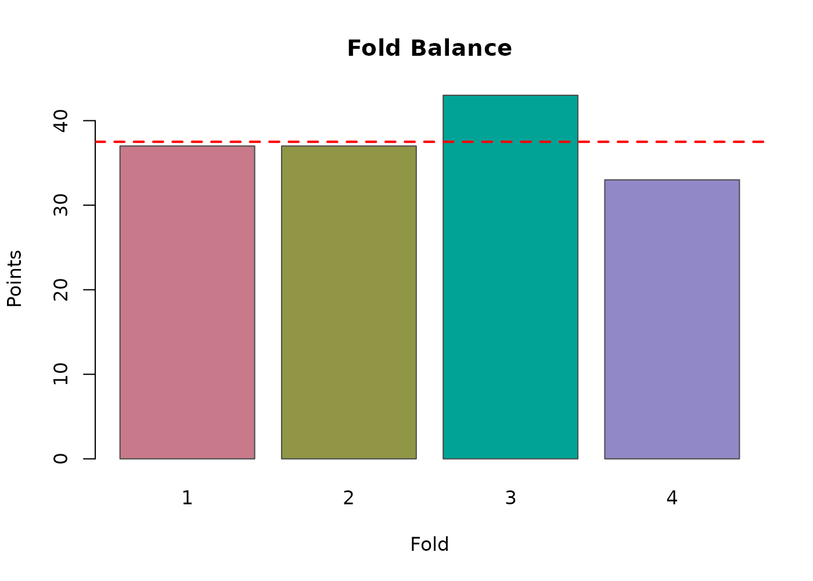
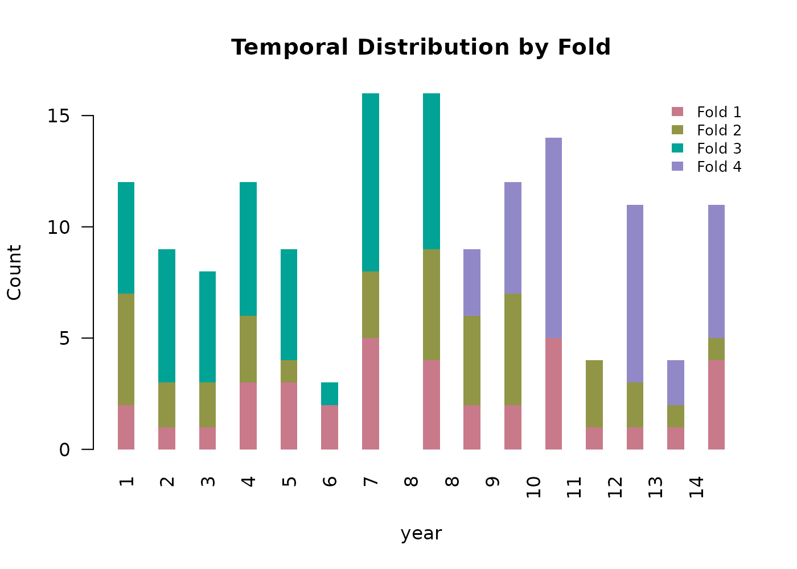
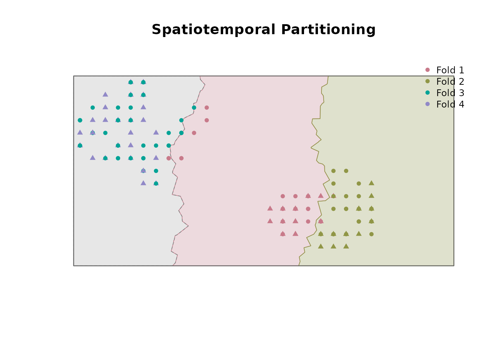
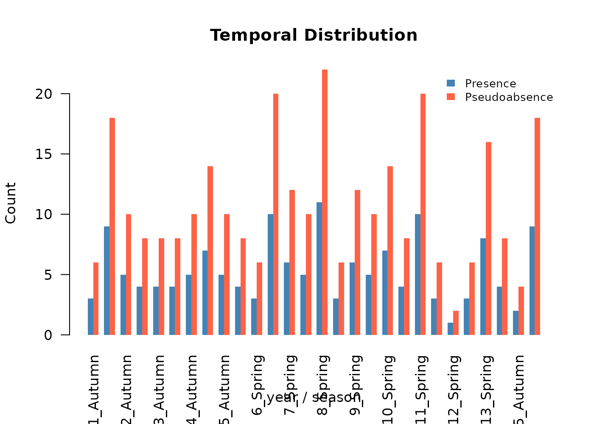
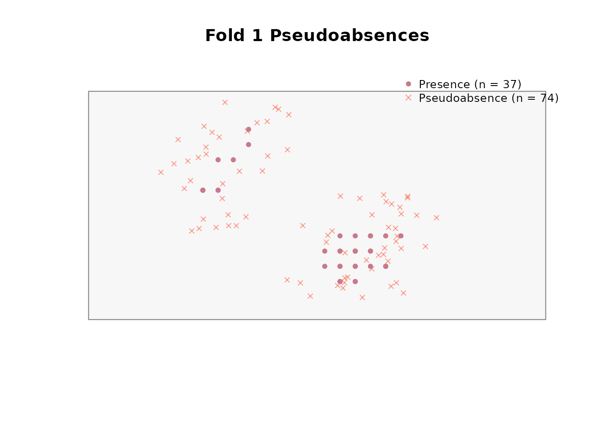
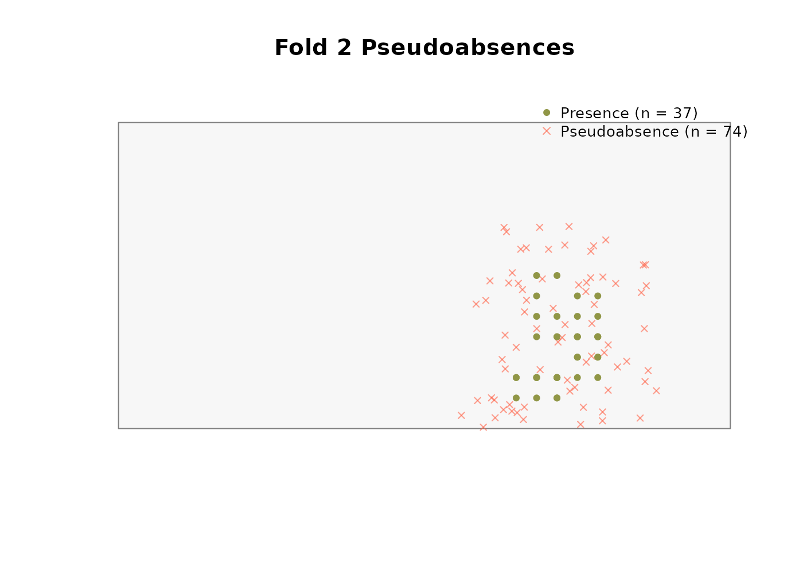
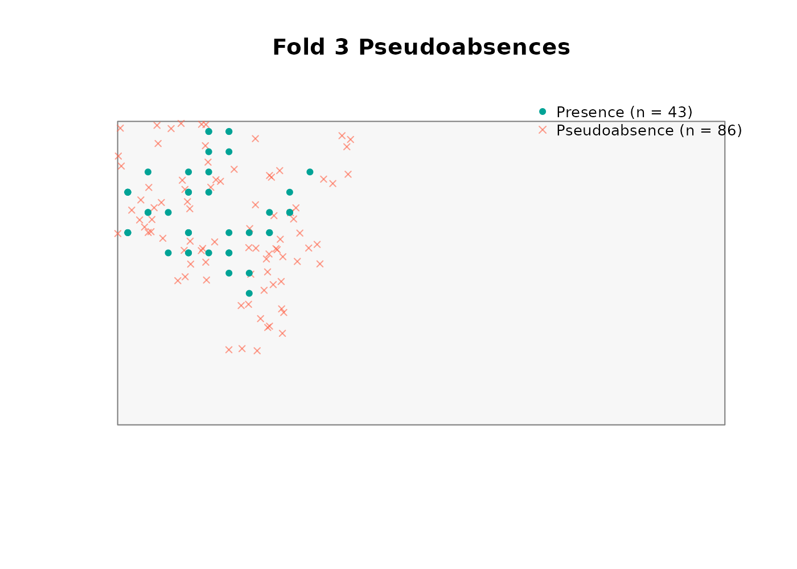
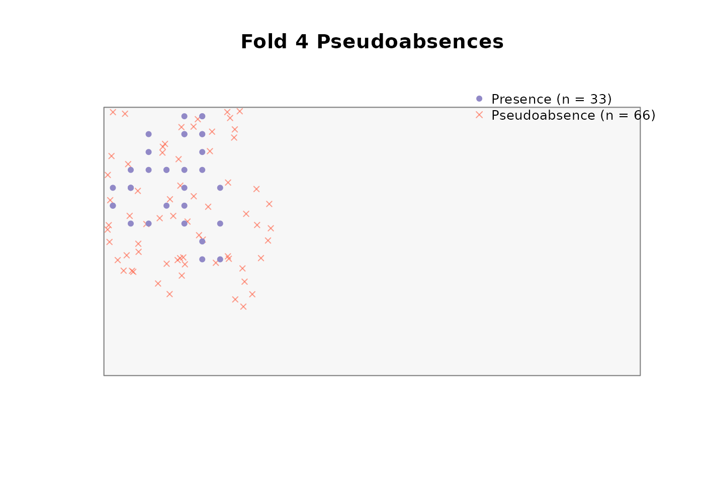

Summary
- Overview
- Aligning rasters
- Spatiotemporal rarefaction
- Temporally explicit extraction
- Scaling rasters
- Spatiotemporal partitioning
- Generating pseudoabsences
- Outputs ready for modeling
Overview
The preprocessing phase of TemporalModelR takes raw occurrence records and environmental rasters and produces the structured inputs that the modeling functions expect. Six functions cover this phase, and they are typically run in order:
-
raster_align()— reproject and mask all rasters to a common reference grid. -
spatiotemporal_rarefaction()— subset occurrence points to one per pixel per time step. -
temporally_explicit_extraction()— extract environmental values matched to each point’s observation time. -
scale_rasters()— z-score rasters using the per-variable means and SDs from extraction. This step is optional, but should be applied for models sensitive to consistant scaling in predictor variabeles. If not, raw values and aligned rasters may be used. -
spatiotemporal_partition()— assign points to single fold, spatial, temporal, spatiotemporal, or random cross-validation folds. -
generate_absences()— produce fold-stratified pseudoabsences for presence/absence models.
This vignette walks through each step using the bundled synthetic
dataset described in the About the Example
Dataset vignette. Read that vignette first if you have not already,
as it explains the structure of the raw rasters and occurrence points
used here. We use the seasonal (compound time-step)
workflow throughout, with forest_cover (annual),
prseas (year-season), and elevation (static)
as predictors. The annual workflow is identical apart from substituting
pr_ann for prseas and dropping
season from the time columns.
library(TemporalModelR)
library(terra)
#> terra 1.9.27
library(sf)
#> Linking to GEOS 3.12.1, GDAL 3.8.4, PROJ 9.4.0; sf_use_s2() is TRUE
raw_dir <- system.file("extdata/rasters_raw", package = "TemporalModelR")
pts_file <- system.file("extdata/points/synthetic_occurrence_points.csv",
package = "TemporalModelR")
ref_file <- file.path(raw_dir, "elevation.tif")
study_crs <- sf::st_crs(terra::rast(ref_file))Aligning rasters
raster_align() standardises every raster in a directory
to a single reference grid by reprojecting, resampling, and masking.
This is essential because downstream functions assume all environmental
layers share identical CRS, resolution, and extent. Even small
differences are enough to misalign extraction at the pixel level. With
the bundled dataset the raw rasters are already on the same grid, but we
run the alignment step to show the call pattern.
aligned_dir <- file.path(tempdir(), "rasters_aligned")
raster_align(
input_dir = raw_dir,
output_dir = aligned_dir,
reference_raster = ref_file,
resample_method = "bilinear",
overwrite = TRUE
)resample_method = "bilinear" is appropriate for
continuous variables like elevation and precipitation. Use
"near" for categorical rasters such as land cover classes;
bilinear interpolation between class codes would incorrectly generate
codes that do not exist.
We now have a directory of aligned rasters which can be used in downstream analyses.
aligned_dir <- system.file("extdata/rasters_aligned", package = "TemporalModelR")
list.files(aligned_dir, pattern = "\\.tif$")[1:6]
#> [1] "elevation_Masked_Updated.tif" "forest_cover_1_Masked_Updated.tif"
#> [3] "forest_cover_10_Masked_Updated.tif" "forest_cover_11_Masked_Updated.tif"
#> [5] "forest_cover_12_Masked_Updated.tif" "forest_cover_13_Masked_Updated.tif"Spatiotemporal rarefaction
spatiotemporal_rarefaction() reduces sampling bias and
pseudoreplication by retaining one occurrence per pixel per unique
time-step combination. The produces an only spatially rarefied table
(one point per pixel, regardless of time), and when
time_cols is provided, it additionally produces a
spatiotemporally rarefied table that preserves multiple observations
from the same pixel when they fall in different time steps.
This distinction matters for temporally explicit modeling. A static workflow would discard the second observation at the same pixel as redundant. A temporally explicit workflow keeps it, correctly recognizing that the environment at that pixel may have changed between the two observation times, making the second record carry unique information about the species’ niche.
rare_dir <- file.path(tempdir(), "rarefied")
rare_out <- spatiotemporal_rarefaction(
points_sp = pts_file,
output_dir = rare_dir,
reference_raster = ref_file,
time_cols = c("year", "season"),
xcol = "x",
ycol = "y",
points_crs = study_crs,
output_prefix = "Pts_seasonal",
verbose = FALSE
)
rare_out$input_points
#> [1] 150
rare_out$spatial_points
#> [1] 84
rare_out$spatiotemporal_points
#> [1] 150The spatial-only count is the number of unique pixels containing at least one record, retaining only 84 points of the starting 150. The spatiotemporal count is the number of unique pixel-year-season combinations and so will typically be larger whenever the dataset contains repeat visits to the same pixel in different time steps. In this instance, all 150 starting points contain unique pixel-year-season combinations.
Two CSVs are written to output_dir. The spatiotemporal
one is what we pass forward; the spatial-only file is retained for
reference and for users who want a static comparison:
rare_out$files_created
#> $spatiotemporal
#> [1] "/tmp/Rtmpc3rnJZ/rarefied/Pts_seasonal_OnePerPixPerTimeStep.csv"
#>
#> $spatial
#> [1] "/tmp/Rtmpc3rnJZ/rarefied/Pts_seasonal_OnePerPix.csv"If we wanted to focus on annual variation rather than both annual and seasonal variaiotn, we could isntead run this focusion only ‘year’ as our time_col of interest. This would instead save all unique pixel-year combinations, but assume locations from the same year and location but different seasons share no new data.
rare_dir <- file.path(tempdir(), "rarefied")
rare_out_annual <- spatiotemporal_rarefaction(
points_sp = pts_file,
output_dir = rare_dir,
reference_raster = ref_file,
time_cols = "year",
xcol = "x",
ycol = "y",
points_crs = study_crs,
output_prefix = "Pts_ann",
verbose = FALSE
)
rare_out_annual$input_points
#> [1] 150
rare_out_annual$spatial_points
#> [1] 84
rare_out_annual$spatiotemporal_points
#> [1] 144This still retains many more points (144) than just the spatially explicit extraction.
Temporally explicit extraction
temporally_explicit_extraction() temporally aligns the
raster dataset with the temporal columns of the now rarefied species
occurrence dataset. For each occurrence record it extracts environmental
values from the raster matched to that point’s observation
time, rather than from a long-term average. The pairing between
point and raster is driven by variable_patterns: clean
variable names on the left, filename patterns with time placeholders on
the right.
ext_dir <- file.path(tempdir(), "extracted")
ext_out <- temporally_explicit_extraction(
points_sp = rare_out$files_created$spatiotemporal,
raster_dir = aligned_dir,
variable_patterns = c(
"elevation" = "elevation",
"forest_cover" = "forest_cover_YEAR",
"prseas" = "prseas_YEAR_SEASON"
),
time_cols = c("year", "season"),
xcol = "X",
ycol = "Y",
points_crs = study_crs,
output_dir = ext_dir,
output_prefix = "extracted_seasonal",
save_raw = TRUE,
save_scaled = TRUE,
save_scaling_params = TRUE,
verbose = FALSE
)
head(ext_out$raw_values)
#> year season pixel_id elevation forest_cover prseas x y
#> 1 11 Spring 5 1247 0.846 310 450 1450
#> 2 4 Autumn 5 1247 0.856 370 450 1450
#> 3 7 Autumn 5 1247 0.825 370 450 1450
#> 4 13 Spring 6 1290 0.844 364 550 1450
#> 5 15 Autumn 6 1290 0.809 370 550 1450
#> 6 5 Autumn 6 1290 0.903 340 550 1450A few details worth highlighting:
-
"elevation" = "elevation"is a static pattern with no placeholder, so every record is matched to the singleelevation.tifraster. -
"forest_cover" = "forest_cover_YEAR"substitutes each record’syearvalue forYEAR, so a record where the year column has a value of 7 is matched to the rasterforest_cover_7.tif. -
"prseas" = "prseas_YEAR_SEASON"substitutes bothyearandseason, so a record where the year column is 3 and the season column = spring is matched to the rasterprseas_3_Spring.tif. - We could also include
"pr_ann" = "pr_ann_YEAR"to match with annual measures of precipitation.
The same call generates three outputs:
ext_out$files_created
#> $raw
#> [1] "/tmp/Rtmpc3rnJZ/extracted/extracted_seasonal_Raw_Values.csv"
#>
#> $scaled
#> [1] "/tmp/Rtmpc3rnJZ/extracted/extracted_seasonal_Scaled_Values.csv"
#>
#> $scaling_params
#> [1] "/tmp/Rtmpc3rnJZ/extracted/extracted_seasonal_Scaling_Parameters.csv"The raw values file is what models that don’t need scaling will consume. The scaled file applies a z-score per variable using the means and SDs computed across all records. The scaling parameters file records those means and SDs so the same transformation can be applied to the prediction rasters, if nessisary.
ext_out$scaling_params
#> variable mean sd
#> 1 elevation 1936.4933333 462.38550909
#> 2 forest_cover 0.8641333 0.04070431
#> 3 prseas 317.3533333 73.04610447Z-scoring matters when an algorithm is sensitive to variable scale,
such as those that rely on Euclidean distances and will misbehave if one
variable’s units dwarf the others (e.g. Temperature running from -10 to
38 C compared to precipitation running from 0 to 3000 mm. Use the
scaling parameters CSV when running scale_rasters() so the
rasters and the extracted point data share the same transformation.
Scaling rasters
scale_rasters() z-scores every raster in a directory
using the per-variable means and SDs from extraction. The transformation
is (value - mean) / sd, applied pixel-wise.
scaled_dir <- file.path(tempdir(), "rasters_scaled")
scale_rasters(
input_dir = aligned_dir,
output_dir = scaled_dir,
scaling_params_file = ext_out$files_created$scaling_params,
variable_patterns = c(
"elevation" = "elevation",
"forest_cover" = "forest_cover_YEAR",
"prseas" = "prseas_YEAR_SEASON"
),
time_cols = c("year", "season"),
overwrite = TRUE,
verbose = FALSE
)variable_patterns mirrors the extraction call. For each
variable in the scaling parameters file, every matching raster in
input_dir is z-scored with the same mean and SD, this
guarantees the rasters and the points share a consistent
transformation.
scaled_dir <- system.file("extdata/rasters_scaled", package = "TemporalModelR")
list.files(aligned_dir, pattern = "\\.tif$")[1:6]
#> [1] "elevation_Masked_Updated.tif" "forest_cover_1_Masked_Updated.tif"
#> [3] "forest_cover_10_Masked_Updated.tif" "forest_cover_11_Masked_Updated.tif"
#> [5] "forest_cover_12_Masked_Updated.tif" "forest_cover_13_Masked_Updated.tif"We now have a directory of scaled rasters which we’ll use for future analyses.
Spatiotemporal partitioning
spatiotemporal_partition() assigns each occurrence
record to a cross-validation fold which will be used to create training
and testing datasets to build and assess our temporally explicit models.
The function supports five modes:
- Single fold. All points used for both training and testing. No held-out validation. Useful for a final production model after cross validatied quality has been established, or when sample sizes are too small for splitting.
- Random. Folds are random shuffles with no spatial or temporal structure. Useful as a naive baseline.
- Spatial-only. Recursive k-d tree bisection produces geographically distinct contiguous regions, one per fold. Use when you want to test geographic transferability and don’t have time structure to exploit.
- Temporal-only. Each fold spans the full study area but covers a distinct slice of the time series, defined by quantile-based breaks. Use to test temporal transferability.
-
Spatiotemporal. Combines the two:
n_spatial_foldsare geographically distinct folds andn_temporal_foldsare time-restricted folds. Tests both kinds of transferability simultaneously.
We use the spatiotemporal design with two folds in each pool. The
function requires the scaled (or raw) extracted points as input, a
polygon defining the study area, and a single time_cols
column (unlike the multi-column placeholders elsewhere; see
?spatiotemporal_partition for the rationale).
ext_scaled_file <- system.file(
"extdata/points/extracted_seasonal_Scaled_Values.csv",
package = "TemporalModelR"
)
study_area_sf <- sf::st_as_sf(sf::st_as_sfc(
sf::st_bbox(c(xmin = 0, xmax = 3000, ymin = 0, ymax = 1500),
crs = study_crs)
))
partition <- spatiotemporal_partition(
reference_shapefile_path = study_area_sf,
points_file_path = ext_scaled_file,
xcol = "x",
ycol = "y",
points_crs = study_crs,
time_cols = "year",
n_spatial_folds = 2,
n_temporal_folds = 2,
max_attempts = 10,
max_imbalance = 0.15,
create_plot = TRUE,
verbose = FALSE
)

#> Spherical geometry (s2) switched off
#> Spherical geometry (s2) switched on
partition$summary
#> parameter value
#> 1 total_folds 4
#> 2 n_spatial_folds 2
#> 3 n_temporal_folds 2
#> 4 n_balanced_folds 0
#> 5 n_random_folds 0
#> 6 partition_mode spatiotemporal
#> 7 total_points 150
#> 8 points_removed 0
#> 9 pct_rows_removed 0
#> 10 final_imbalance_pct 14.67
#> 11 temporal_partitioning_enabled TRUEThe returned points_sf carries a fold
column alongside the original predictor columns. Two of the four folds
are geographically restricted but span the full time series; the other
two overalap spatially and span the remainder of the study area but are
restricted to a distinct time slice each.
For partitioning purposes, time information must be encoded in a
single column based on what temporal scale is relevant for the desired
partitioning. Both example workflows in this package use the coarsest
time scale for partitioning time_cols = "year" at this step
(the season is preserved in the point data for later modeling and
prediction, just not used for fold construction). If both year and
season are conceptually meaningful for fold breaks, encode them into a
single ordered numeric column before partitioning. Alternatively,
partitioning could be done across seasons to view the environmental
transferability of seasonal environmental values.
Generating pseudoabsences
generate_absences() produces fold-stratified
pseudoabsence/background points for presence/absence modeling.
Pseudoabsences measure the environmental charactersitics of locations
not otherwise characterized by species occcurances and are essential for
GLMs, GAMs, and random forests when no ‘true absence’ points exist. The
hypervolume method is presence-only and does not need them.
Three generation methods are supported:
- Random. Uniform sampling across the study area with a small buffer around presences to avoid exact overlap.
- Buffer. Sampling within a user-specified radius of presence locations. Useful when you want pseudoabsences from the same general environment as the presences, on the assumption that nearby unsampled locations are more likely to represent true absence than locations far from any survey effort.
-
Environmental. Cells outside the species’
environmental tolerance envelope are identified as candidates, then
k-means clustering selects a spatially representative subset. When
buffer_distanceis also supplied the environmental filtering is restricted to within that buffer, implementing the three-step approach of Senay et al. (2013).
The function distributes pseudoabsences across folds and across time steps in proportion to the presences in each fold-time combination, so the potential environmental conditions experienced by each pseudoabsence match those experienced by the presences it complements.
We use the buffer method with a 300 m radius (three pixels at the synthetic landscape’s 100 m resolution) and a 2:1 pseudoabsence-to-presence ratio:
absences <- generate_absences(
partition_result = partition,
reference_shapefile_path = study_area_sf,
raster_dir = scaled_dir,
variable_patterns = c(
"elevation" = "elevation",
"forest_cover" = "forest_cover_YEAR",
"prseas" = "prseas_YEAR_SEASON"
),
method = "buffer",
buffer_distance = 300,
ratio = 2,
time_cols = c("year", "season"),
create_plot = TRUE,
plot_by_fold = TRUE,
verbose = FALSE
)




absences$summary
#> fold n_presences n_pseudoabsences ratio_achieved
#> 1 1 37 74 2
#> 2 2 37 74 2
#> 3 3 43 86 2
#> 4 4 33 66 2Note that variable_patterns and time_cols
here use both year and season. The
pseudoabsences are stamped with year-season values just like the
presences, and the environmental values attached to them are pulled from
the matching time-specific raster. This consistency is what keeps the
temporally explicit workflow intact through the model fitting step.
Outputs ready for modeling
At this point the three key downstream inputs are in hand:
-
scaled_dir— the directory of scaled (or aligned inrasters_aligned, if scaling was skipped) rasters from which environmental conditions will be projected across space and time. -
partition— the rarified, fold-assigned, time explicit environment data from species occurrence points. -
absences— the fold-stratified pseudoabsences with matching environmental attributes.
These are passed directly to any of the four model builders covered in the following parallel vignettes:
Once a model is fitted, predictions are projected through space and
time using generate_spatiotemporal_predictions(), and the
resulting prediction stack is summarised in the Postprocessing predictions vignette.